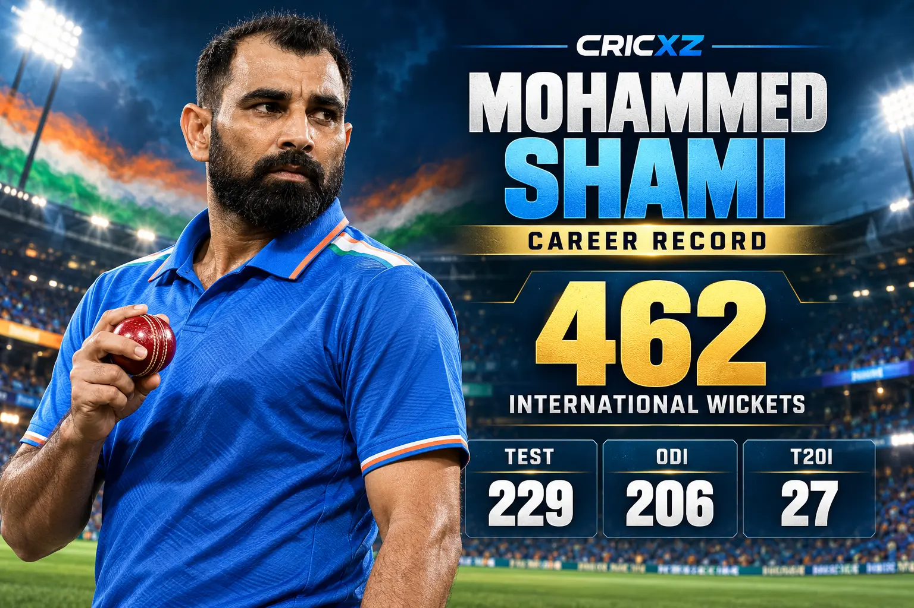
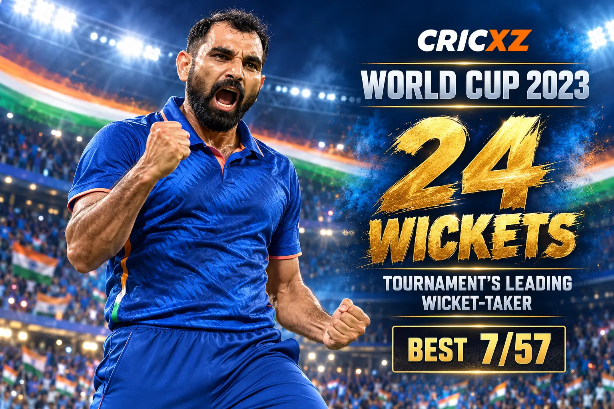

Test Career
- Matches
- 64
- Wickets
- 229
- Bowling average
- 27.71
- Economy rate
- 3.31
- Best bowling
- 6/56
- Five-wicket hauls
- 6
- Runs
- 750
- Highest score
- 56*

Mohammed Shami is one of India's leading modern fast bowlers, renowned for an upright seam, late movement and high-impact spells in Tests and ODI World Cups.
Career statistics are current through 21 October 2026.
Shami remains active in domestic cricket; figures will change after future appearances.
Across 197 international matches, Shami has taken 462 wickets. His record combines sustained Test effectiveness with an exceptional ODI strike rate and several defining performances at global tournaments.

Shami finished the 2023 ODI World Cup as the tournament's leading wicket-taker with 24 wickets in seven matches. His 7/57 against New Zealand in the semi-final remains the best ODI bowling analysis by an Indian.
His World Cup impact also included a hat-trick against Afghanistan in 2019 and 17 wickets during India's run to the 2015 semi-finals.
6 November 2013
Against West Indies at Kolkata.
6 January 2013
Against Pakistan at Delhi.
21 March 2014
Against Pakistan at Dhaka.
Recorded India's best ODI bowling figures in the 2023 World Cup semi-final.
Finished as the tournament's leading wicket-taker despite playing only seven matches.
Took nine wickets, joint-most for India in the title-winning campaign.
India's leading reverse-swing specialist across a 64-Test career snapshot.
Claimed nine wickets against West Indies on his Test debut at Eden Gardens.
Combined Test, ODI and T20I wickets in this verified snapshot.
Shami last represented India in the Champions Trophy final on 9 March 2025. After being omitted from the 2026 New Zealand tour squads, he said that he remains fit, continues to train and has not abandoned his international comeback goal.
Read the full CricXZ report: Mohammed Shami keeps India comeback hope alive after New Zealand tour snub.